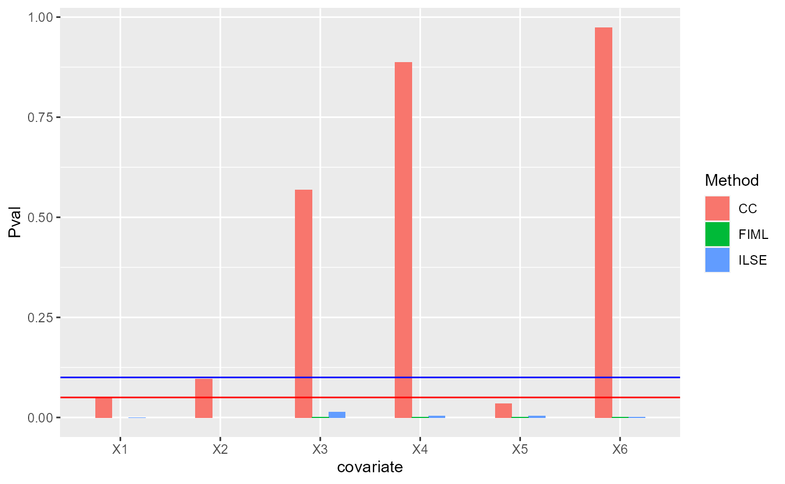

Load ILSE package
The package can be loaded with the command:
library("ILSE")
#> ILSE : Linear regression when covariates include missing values by embedding the
#> correlation information between covariates. Especially for block missing data,
#> it works well. 'ILSE' conducts imputation and regression simultaneously and iteratively.
#> More details can be referred to
#> Huazhen Lin, Wei Liu and Wei Lan. (2021) <doi:10.1080/07350015.2019.1635486>.
#>
#> Attaching package: 'ILSE'
#> The following objects are masked from 'package:base':
#>
#> print, summaryILSE can handle (non)missing data with continuous variables
First, we generate a small simulated data.
set.seed(1)
n <- 100
p <- 6
X <- MASS::mvrnorm(n, rep(0, p), cor.mat(p, rho=0.5))
beta0 <- rep(c(1,-1), times=3)
Y <- -2+ X %*% beta0 + rnorm(n, sd=1)A special case: without missing values
Then, we fit the linear regression model without missing values based on ILSE.
ilse1 <- ilse(Y~X)
print(ilse1)
#> $beta
#> (Intercept) X1 X2 X3 X4 X5
#> -2.2022943 0.8959225 -1.0580583 1.0379296 -1.0645601 0.9041809
#> X6
#> -0.8213827
#>
#> $d.fn
#> [1] 1
#>
#> $d.par
#> [1] 2.164223e-15
#>
#> $iterations
#> [1] 2We can also create a (data.frame) object as input for ILSE.
dat <- data.frame(Y=Y, X=X)
ilse1 <- ilse(Y~., data=dat)
print(ilse1)
#> $beta
#> (Intercept) X.1 X.2 X.3 X.4 X.5
#> -2.2022943 0.8959225 -1.0580583 1.0379296 -1.0645601 0.9041809
#> X.6
#> -0.8213827
#>
#> $d.fn
#> [1] 1
#>
#> $d.par
#> [1] 2.164223e-15
#>
#> $iterations
#> [1] 2
Coef(ilse1) # access the coefficients
#> (Intercept) X.1 X.2 X.3 X.4 X.5
#> -2.2022943 0.8959225 -1.0580583 1.0379296 -1.0645601 0.9041809
#> X.6
#> -0.8213827
Fitted.values(ilse1)[1:5]
#> 1 2 3 4 5
#> -2.1420667 -2.1622085 -0.2436451 -2.2088320 -2.9842630
Residuals(ilse1)[1:5]
#> 1 2 3 4 5
#> -0.09655756 1.47289435 1.06380419 0.59141808 0.14205686Check the significant variables by bootstratp.
s1 <- summary(ilse1)
#> ===================Start bootstrapping================
#> ===================Finish bootstrapping================
s1
#> Estimate std. Error Z value Pr(>|Z|)
#> (Intercept) -2.2022943 0.1081212 -20.368763 0.000000e+00
#> X.1 0.8959225 0.1267324 7.069404 1.556089e-12
#> X.2 -1.0580583 0.1303466 -8.117270 4.440892e-16
#> X.3 1.0379296 0.1584818 6.549203 5.784506e-11
#> X.4 -1.0645601 0.1311864 -8.114868 4.440892e-16
#> X.5 0.9041809 0.1720390 5.255675 1.474825e-07
#> X.6 -0.8213827 0.1411326 -5.819935 5.887039e-09Handle data with missing values
First, we randomly remove some entries in X.
mis_rate <- 0.3
set.seed(1)
na_id <- sample(1:(n*p), n*p*mis_rate)
Xmis <- X
Xmis[na_id] <- NA
ncomp <- sum(complete.cases(Xmis))
message("Number of complete cases is ", ncomp, '\n')
#> Number of complete cases is 9Second, we use lm to fit linear regression model based on complete cases, i.e., CC analysis. We can not detect any siginificant covariates.
lm1 <- lm(Y~Xmis)
s_cc <- summary.lm(lm1)
s_cc
#>
#> Call:
#> lm(formula = Y ~ Xmis)
#>
#> Residuals:
#> 50 57 63 66 68 72 79 81
#> -0.17743 -0.27005 -0.38191 0.10914 0.09136 0.07687 0.39794 -0.09317
#> 96
#> 0.24726
#>
#> Coefficients:
#> Estimate Std. Error t value Pr(>|t|)
#> (Intercept) -1.56828 0.23697 -6.618 0.0221 *
#> Xmis1 1.70397 0.39504 4.313 0.0498 *
#> Xmis2 -0.89937 0.30019 -2.996 0.0957 .
#> Xmis3 0.34498 0.50997 0.676 0.5685
#> Xmis4 0.07982 0.49712 0.161 0.8872
#> Xmis5 1.23740 0.23485 5.269 0.0342 *
#> Xmis6 -0.01652 0.44224 -0.037 0.9736
#> ---
#> Signif. codes: 0 '***' 0.001 '**' 0.01 '*' 0.05 '.' 0.1 ' ' 1
#>
#> Residual standard error: 0.5023 on 2 degrees of freedom
#> (91 observations deleted due to missingness)
#> Multiple R-squared: 0.9839, Adjusted R-squared: 0.9357
#> F-statistic: 20.39 on 6 and 2 DF, p-value: 0.04748Third, we use ILSE to fit the linear regression model based on all data. We can fit a linear regression model without intercept by setting formula:
ilse2 <- ilse(Y~Xmis+0, data=NULL, verbose=T)
#> iter=2, d_fn=1.000000, d_par = 0.308620
#> iter=3, d_fn=0.000352, d_par = 0.044962
#> iter=4, d_fn=0.000110, d_par = 0.012572
#> iter=5, d_fn=0.000031, d_par = 0.002769
#> iter=6, d_fn=0.000007, d_par = 0.000561
#> iter=7, d_fn=0.000001, d_par = 0.000113
#> iter=8, d_fn=0.000000, d_par = 0.000023
#> iter=9, d_fn=0.000000, d_par = 0.000005
print(ilse2)
#> $beta
#> Xmis1 Xmis2 Xmis3 Xmis4 Xmis5 Xmis6
#> 0.58596479 -0.74059817 1.06687893 -0.36906159 0.19980700 -0.03735775
#>
#> $d.fn
#> [1] 4.884727e-08
#>
#> $d.par
#> [1] 4.528696e-06
#>
#> $iterations
#> [1] 9Then, we fit a linear regression model with intercept by following command
ilse2 <- ilse(Y~Xmis, data=NULL, verbose=T)
#> iter=2, d_fn=1.000000, d_par = 0.308905
#> iter=3, d_fn=0.001970, d_par = 0.045567
#> iter=4, d_fn=0.000397, d_par = 0.009050
#> iter=5, d_fn=0.000088, d_par = 0.002126
#> iter=6, d_fn=0.000020, d_par = 0.000517
#> iter=7, d_fn=0.000005, d_par = 0.000125
#> iter=8, d_fn=0.000001, d_par = 0.000029
#> iter=9, d_fn=0.000000, d_par = 0.000007
print(ilse2)
#> $beta
#> (Intercept) Xmis1 Xmis2 Xmis3 Xmis4 Xmis5
#> -2.4162300 0.8441851 -1.1313148 0.7766423 -0.7653005 0.7912872
#> Xmis6
#> -0.9474621
#>
#> $d.fn
#> [1] 2.243866e-07
#>
#> $d.par
#> [1] 6.642455e-06
#>
#> $iterations
#> [1] 9Fourth, Bootstrap is applied to evaluate the standard error and p-values of each coefficients estimated by ILSE. We observe four significant coefficients.
s2 <- summary(ilse2, Nbt=20)
#> ===================Start bootstrapping================
#> ===================Finish bootstrapping================
s2
#> Estimate std. Error Z value Pr(>|Z|)
#> (Intercept) -2.4162300 0.2365023 -10.216517 0.000000e+00
#> Xmis1 0.8441851 0.2097533 4.024657 5.705834e-05
#> Xmis2 -1.1313148 0.2191038 -5.163374 2.425382e-07
#> Xmis3 0.7766423 0.3131358 2.480209 1.313052e-02
#> Xmis4 -0.7653005 0.2574563 -2.972545 2.953418e-03
#> Xmis5 0.7912872 0.2753075 2.874194 4.050601e-03
#> Xmis6 -0.9474621 0.2720090 -3.483201 4.954564e-04In ILSE package, we also provide Full Information Maximum Likelihood for Linear Regression fimlreg. We show how to use it to handle the above missing data.
fimllm <- fimlreg(Y~Xmis)
print(fimllm)
#> $beta
#> intercept Xmis1 Xmis2 Xmis3 Xmis4 Xmis5 Xmis6
#> -2.677095 1.323890 -2.372631 1.996090 -1.669343 2.249249 -1.547666
#>
#> $formula
#> Y ~ XmisWe also use bootstrap to evaluate the standard error and p-values of each coefficients estimated by ILSE. We observe only one significant coefficients.
s_fiml <- summary(fimllm, Nbt=20)
#> ===================Start bootstrapping================
#> ===================Finish bootstrapping================
s_fiml
#> Estimate std. Error Z value Pr(>|Z|)
#> intercept -2.677095 0.2637704 -10.149337 0.000000e+00
#> Xmis1 1.323890 0.2698174 4.906613 9.266258e-07
#> Xmis2 -2.372631 0.4670243 -5.080316 3.768081e-07
#> Xmis3 1.996090 0.6178430 3.230740 1.234704e-03
#> Xmis4 -1.669343 0.5038814 -3.312969 9.231123e-04
#> Xmis5 2.249249 0.6264812 3.590289 3.303112e-04
#> Xmis6 -1.547666 0.4104885 -3.770302 1.630500e-04Visualization
We visualize the p-vaules of each methods , where red line denotes 0.05 in y-axis and blue line 0.1 in y-axis.
pMat <- cbind(CC=s_cc$coefficients[,4], ILSE=s2[,4], FIML=s_fiml[,4])
library(ggplot2)
df1 <- data.frame(Pval= as.vector(pMat[-1,]),
Method =factor(rep(c('CC', "ILSE", "FIML"),each=p)),
covariate= factor(rep(paste0("X", 1:p), times=3)))
ggplot(data=df1, aes(x=covariate, y=Pval, fill=Method)) + geom_bar(position = "dodge", stat="identity",width = 0.5) + geom_hline(yintercept = 0.05, color='red') + geom_hline(yintercept = 0.1, color='blue')
ILSE can handle missing data with continuos and categorical variables
Base on the above data, we add a new column, a categorical variable (Sex), into the data.frame. This variable is not associated with the outcome variable.
dat <- data.frame(Y=Y, X=Xmis)
dat$Sex <- factor(rep(c('male', 'female'), times=n/2))
dat$Sex[sample(1:n, n*mis_rate)] <- NA
ilse1 <- ilse(Y~., data=dat, verbose = T)
#> iter=2, d_fn=1.000000, d_par = 0.314454
#> iter=3, d_fn=0.003774, d_par = 0.054618
#> iter=4, d_fn=0.000844, d_par = 0.012373
#> iter=5, d_fn=0.000241, d_par = 0.004961
#> iter=6, d_fn=0.000074, d_par = 0.002231
#> iter=7, d_fn=0.000023, d_par = 0.000978
#> iter=8, d_fn=0.000007, d_par = 0.000407
#> iter=9, d_fn=0.000002, d_par = 0.000161
#> iter=10, d_fn=0.000000, d_par = 0.000060
#> iter=11, d_fn=0.000000, d_par = 0.000022
#> iter=12, d_fn=0.000000, d_par = 0.000008We can change the bootstrap times in calculate the standard errors, Z value and p-values of coefficients.
s3 <- summary(ilse1, Nbt=40)
#> ===================Start bootstrapping================
#> ===================Finish bootstrapping================
s3
#> Estimate std. Error Z value Pr(>|Z|)
#> (Intercept) -2.6313598 0.2897297 -9.0821189 0.000000e+00
#> X.1 0.8201768 0.2214807 3.7031533 2.129362e-04
#> X.2 -1.1144850 0.2198468 -5.0693710 3.991326e-07
#> X.3 0.6647766 0.3600971 1.8461037 6.487715e-02
#> X.4 -0.7696752 0.3517871 -2.1879009 2.867682e-02
#> X.5 0.7711729 0.2924944 2.6365392 8.375653e-03
#> X.6 -1.0168773 0.3240620 -3.1379099 1.701572e-03
#> Sexmale 0.2601348 0.5927345 0.4388723 6.607540e-01ILSE can correctly identify the important variables
generate data
First, we generate data from a linear regression model with three inportant variables(1,3,5) and three unimportant variables(2,4,6).
set.seed(10)
n <- 100
p <- 6
X <- MASS::mvrnorm(n, rep(0, p), cor.mat(p, rho=0.5))
beta0 <- rep(c(1,0), times=3)
Y <- -2+ X %*% beta0 + rnorm(n, sd=1)
message("The true regression coefficients are: ", paste0(beta0, ' '))
#> The true regression coefficients are: 1 0 1 0 1 0We randomly assign missing values in the design matrix.
Next, we use ILSE to fit model.
dat <- data.frame(Y=Y, X=Xmis)
ilse1 <- ilse(Y~., data=dat, verbose = T)
#> iter=2, d_fn=1.000000, d_par = 0.160953
#> iter=3, d_fn=0.000558, d_par = 0.013963
#> iter=4, d_fn=0.000061, d_par = 0.002379
#> iter=5, d_fn=0.000016, d_par = 0.000458
#> iter=6, d_fn=0.000003, d_par = 0.000094
#> iter=7, d_fn=0.000001, d_par = 0.000019
#> iter=8, d_fn=0.000000, d_par = 0.000004
s3 <- summary(ilse1)
#> ===================Start bootstrapping================
#> ===================Finish bootstrapping================
s3
#> Estimate std. Error Z value Pr(>|Z|)
#> (Intercept) -2.06112425 0.2299321 -8.9640573 0.000000e+00
#> X.1 0.83467442 0.1951700 4.2766536 1.897237e-05
#> X.2 0.12647552 0.1444486 0.8755745 3.812614e-01
#> X.3 0.75657880 0.1640876 4.6108221 4.010797e-06
#> X.4 0.03971028 0.1759662 0.2256699 8.214581e-01
#> X.5 0.99496376 0.1359046 7.3210453 2.460254e-13
#> X.6 0.15242471 0.1536781 0.9918441 3.212736e-01Fit model by using lm and FIML, finally compare ILSE with these two methods.
lm1 <- lm(Y~Xmis)
s_cc <- summary.lm(lm1)
fimllm <- fimlreg(Y~Xmis)
s_fiml <- summary(fimllm)
#> ===================Start bootstrapping================
#> ===================Finish bootstrapping================Visualization
We visualize the p-vaules of each methods , where red line denotes 0.05 in y-axis. Under significance level 0.05, we found both ILSE and FIML can identify all important variables (X1, X3 and X5), while CC method only identified X1 and X5.
library(ggthemes)
#> Warning: package 'ggthemes' was built under R version 4.0.4
pMat <- cbind(CC=s_cc$coefficients[,4], ILSE=s3[,4], FIML=s_fiml[,4])
df1 <- data.frame(Pval= as.vector(pMat[-1,]),
Method =factor(rep(c('CC', "ILSE", "FIML"),each=p)),
covariate= factor(rep(paste0("X", 1:p), times=3)))
ggplot(data=df1, aes(x=covariate, y=Pval, fill=Method)) + geom_bar(position = "dodge", stat="identity",width = 0.5) + geom_hline(yintercept = 0.05, color='red') + scale_fill_economist()
ILSE can handle data with high missing rate
Here, we generate a data with 80% missing values, then use ILSE to fit model.
# generate data from linear model
set.seed(1)
n <- 100
p <- 6
X <- MASS::mvrnorm(n, rep(0, p), cor.mat(p, rho=0.5))
beta0 <- rep(c(1,-1), times=3)
Y <- -2+ X %*% beta0 + rnorm(n, sd=1)
# generate missing values
mis_rate <- 0.8
set.seed(1)
na_id <- sample(1:(n*p), n*p*mis_rate)
Xmis <- X
Xmis[na_id] <- NA
# retain 4 complete cases.
Xmis[1:4,] <- X[1:4, ]
sum(complete.cases(Xmis))
#> [1] 4CC method will failed.
lm1 <- lm(Y~Xmis)
summary.lm(lm1)
#>
#> Call:
#> lm(formula = Y ~ Xmis)
#>
#> Residuals:
#> ALL 4 residuals are 0: no residual degrees of freedom!
#>
#> Coefficients: (3 not defined because of singularities)
#> Estimate Std. Error t value Pr(>|t|)
#> (Intercept) -40.397 NA NA NA
#> Xmis1 8.865 NA NA NA
#> Xmis2 -63.461 NA NA NA
#> Xmis3 -2.049 NA NA NA
#> Xmis4 NA NA NA NA
#> Xmis5 NA NA NA NA
#> Xmis6 NA NA NA NA
#>
#> Residual standard error: NaN on 0 degrees of freedom
#> (96 observations deleted due to missingness)
#> Multiple R-squared: 1, Adjusted R-squared: NaN
#> F-statistic: NaN on 3 and 0 DF, p-value: NAHowever, ILSE can still work.
ilse2 <- ilse(Y~Xmis, verbose = T)
#> iter=2, d_fn=1.000000, d_par = 0.271275
#> iter=3, d_fn=0.001267, d_par = 0.058449
#> iter=4, d_fn=0.000385, d_par = 0.020572
#> iter=5, d_fn=0.000049, d_par = 0.012448
#> iter=6, d_fn=0.000018, d_par = 0.007985
#> iter=7, d_fn=0.000013, d_par = 0.005129
#> iter=8, d_fn=0.000008, d_par = 0.003294
#> iter=9, d_fn=0.000005, d_par = 0.002115
#> iter=10, d_fn=0.000003, d_par = 0.001357
#> iter=11, d_fn=0.000002, d_par = 0.000870
#> iter=12, d_fn=0.000001, d_par = 0.000558
#> iter=13, d_fn=0.000001, d_par = 0.000358
#> iter=14, d_fn=0.000001, d_par = 0.000229
#> iter=15, d_fn=0.000000, d_par = 0.000147
#> iter=16, d_fn=0.000000, d_par = 0.000094
#> iter=17, d_fn=0.000000, d_par = 0.000060
#> iter=18, d_fn=0.000000, d_par = 0.000039
s2 <- summary(ilse2)
#> ===================Start bootstrapping================
#> ===================Finish bootstrapping================
s2
#> Estimate std. Error Z value Pr(>|Z|)
#> (Intercept) -2.6289947 0.4007115 -6.5608166 5.351386e-11
#> Xmis1 0.1629590 0.3229931 0.5045277 6.138906e-01
#> Xmis2 -0.7229765 0.5864368 -1.2328293 2.176395e-01
#> Xmis3 1.0723690 0.5802388 1.8481510 6.458050e-02
#> Xmis4 -0.5075846 0.3998173 -1.2695414 2.042480e-01
#> Xmis5 0.6336328 0.4455270 1.4222097 1.549654e-01
#> Xmis6 -0.3460781 0.5279156 -0.6555557 5.121101e-01ILSE can handle large-scale data
We generate a large-scale data with n=1000 and p = 50
n <- 1000
p <- 50
X <- MASS::mvrnorm(n, rep(0, p), cor.mat(p, rho=0.5))
beta0 <- rep(c(1,-1), length=p)
Y <- -2+ X %*% beta0 + rnorm(n, sd=1)
mis_rate <- 0.3
set.seed(1)
na_id <- sample(1:(n*p), n*p*mis_rate)
Xmis <- X
Xmis[na_id] <- NA
Xmis[1:10,] <- X[1:10,]
lm1 <- lm(Y~Xmis)
lm1
#>
#> Call:
#> lm(formula = Y ~ Xmis)
#>
#> Coefficients:
#> (Intercept) Xmis1 Xmis2 Xmis3 Xmis4 Xmis5
#> -3.5365 5.8279 -4.1408 -0.6490 0.4946 2.4875
#> Xmis6 Xmis7 Xmis8 Xmis9 Xmis10 Xmis11
#> -2.1856 4.1492 3.3353 -4.1414 NA NA
#> Xmis12 Xmis13 Xmis14 Xmis15 Xmis16 Xmis17
#> NA NA NA NA NA NA
#> Xmis18 Xmis19 Xmis20 Xmis21 Xmis22 Xmis23
#> NA NA NA NA NA NA
#> Xmis24 Xmis25 Xmis26 Xmis27 Xmis28 Xmis29
#> NA NA NA NA NA NA
#> Xmis30 Xmis31 Xmis32 Xmis33 Xmis34 Xmis35
#> NA NA NA NA NA NA
#> Xmis36 Xmis37 Xmis38 Xmis39 Xmis40 Xmis41
#> NA NA NA NA NA NA
#> Xmis42 Xmis43 Xmis44 Xmis45 Xmis46 Xmis47
#> NA NA NA NA NA NA
#> Xmis48 Xmis49 Xmis50
#> NA NA NA
system.time(ilse2 <- ilse(Y~Xmis, data=NULL, verbose=T))
#> iter=2, d_fn=1.000000, d_par = 0.738244
#> iter=3, d_fn=0.010435, d_par = 0.273583
#> iter=4, d_fn=0.003554, d_par = 0.094381
#> iter=5, d_fn=0.001532, d_par = 0.043520
#> iter=6, d_fn=0.000502, d_par = 0.021186
#> iter=7, d_fn=0.000182, d_par = 0.012532
#> iter=8, d_fn=0.000066, d_par = 0.009388
#> iter=9, d_fn=0.000001, d_par = 0.007465
#> iter=10, d_fn=0.000028, d_par = 0.005977
#> iter=11, d_fn=0.000032, d_par = 0.004584
#> iter=12, d_fn=0.000030, d_par = 0.003399
#> iter=13, d_fn=0.000025, d_par = 0.002459
#> iter=14, d_fn=0.000020, d_par = 0.001736
#> iter=15, d_fn=0.000015, d_par = 0.001201
#> iter=16, d_fn=0.000011, d_par = 0.000817
#> iter=17, d_fn=0.000008, d_par = 0.000549
#> iter=18, d_fn=0.000006, d_par = 0.000364
#> iter=19, d_fn=0.000004, d_par = 0.000240
#> iter=20, d_fn=0.000003, d_par = 0.000157
#> user system elapsed
#> 27.46 0.03 27.64Session information
sessionInfo()
#> R version 4.0.3 (2020-10-10)
#> Platform: x86_64-w64-mingw32/x64 (64-bit)
#> Running under: Windows 10 x64 (build 22000)
#>
#> Matrix products: default
#>
#> locale:
#> [1] LC_COLLATE=Chinese (Simplified)_China.936
#> [2] LC_CTYPE=Chinese (Simplified)_China.936
#> [3] LC_MONETARY=Chinese (Simplified)_China.936
#> [4] LC_NUMERIC=C
#> [5] LC_TIME=Chinese (Simplified)_China.936
#>
#> attached base packages:
#> [1] stats graphics grDevices utils datasets methods base
#>
#> other attached packages:
#> [1] ggthemes_4.2.4 ggplot2_3.3.5 ILSE_1.1.6
#>
#> loaded via a namespace (and not attached):
#> [1] tidyselect_1.1.1 xfun_0.29 bslib_0.3.1 purrr_0.3.4
#> [5] pbapply_1.5-0 colorspace_2.0-2 vctrs_0.3.8 generics_0.1.1
#> [9] htmltools_0.5.2 yaml_2.2.2 utf8_1.2.2 rlang_0.4.11
#> [13] pkgdown_1.6.1 jquerylib_0.1.4 pillar_1.6.5 glue_1.4.2
#> [17] withr_2.4.3 DBI_1.1.2 lifecycle_1.0.1 stringr_1.4.0
#> [21] munsell_0.5.0 gtable_0.3.0 ragg_1.1.3 memoise_2.0.0
#> [25] evaluate_0.14 labeling_0.4.2 knitr_1.37 fastmap_1.1.0
#> [29] parallel_4.0.3 fansi_0.5.0 highr_0.9 Rcpp_1.0.7
#> [33] scales_1.1.1 cachem_1.0.6 desc_1.3.0 jsonlite_1.7.2
#> [37] farver_2.1.0 systemfonts_1.0.3 fs_1.5.2 textshaping_0.3.5
#> [41] digest_0.6.28 stringi_1.7.5 dplyr_1.0.7 grid_4.0.3
#> [45] rprojroot_2.0.2 tools_4.0.3 magrittr_2.0.1 sass_0.4.0
#> [49] tibble_3.1.5 crayon_1.4.2 pkgconfig_2.0.3 MASS_7.3-53.1
#> [53] ellipsis_0.3.2 assertthat_0.2.1 rmarkdown_2.11 R6_2.5.1
#> [57] compiler_4.0.3